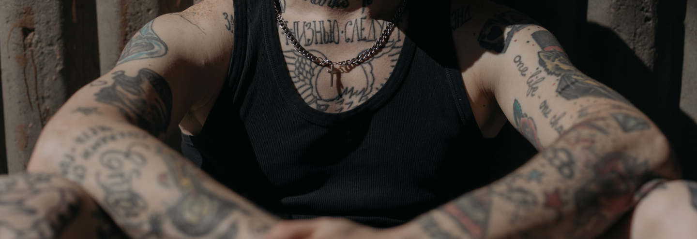
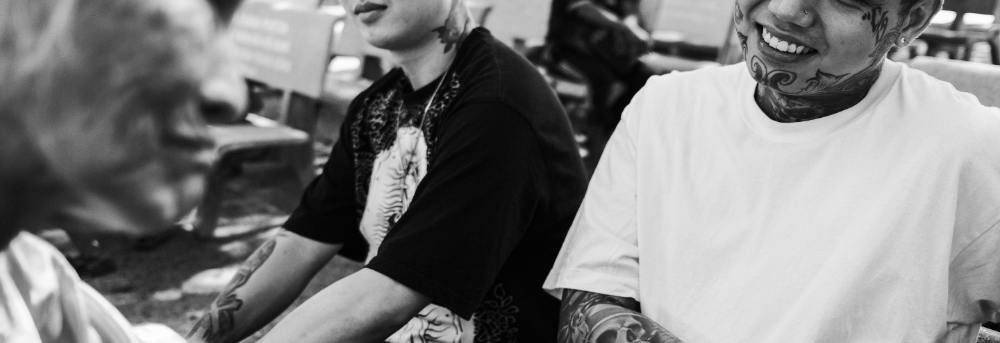

-Jennifer Aniston-
Lo raro es sexy, como las cicatrices o las fracturas en los dientes. Lo mismo que sucede con los tatuajes, son rebeldía.

-Herman Melville-
Y qué es, pensé. Es sólo su exterior, un hombre puede ser honesto bajo cualquier tipo de piel.

-Jack London-
Enséñame a alguien con un tatuaje y yo te enseñaré a alguien con un pasado interesante.